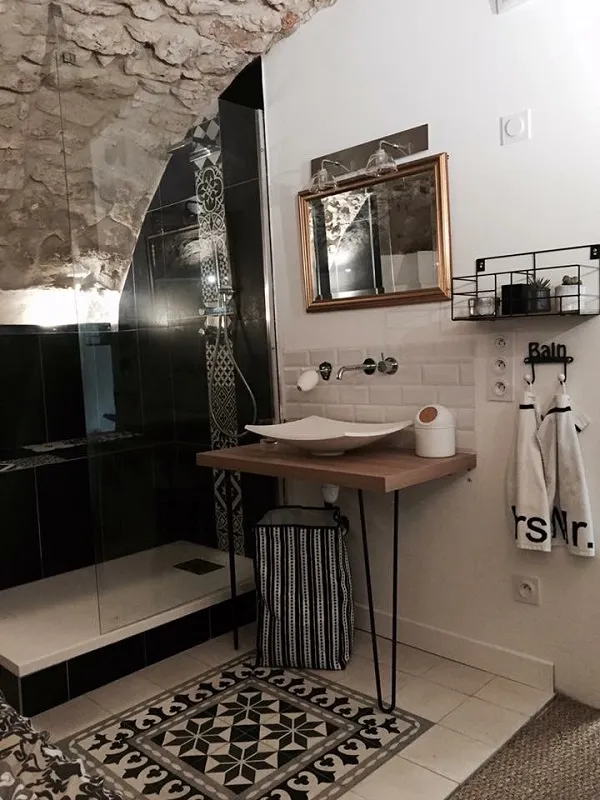

Notre process de rénovation
Chaque rénovation commence par la dépose de l'ancien revêtement : carrelage, faïence ou autre. On prépare ensuite le support en réalisant un ragréage ou une mise à niveau si le sol n'est pas plan. Si l'état du support l'exige, on coule une chape avant la pose.
Une fois le support prêt, on pose le nouveau carrelage au sol et la faïence aux murs. Vous n'avez qu'un seul interlocuteur pour l'ensemble du chantier, de la première dépose à la dernière finition. C'est plus simple pour vous et plus efficace pour le résultat.

Premier échange gratuit
Vous avez un projet de rénovation ? On se déplace chez vous pour évaluer le chantier et vous proposer un devis adapté.
Demander un devis gratuitExemples de rénovations réalisées
Parmi nos chantiers récents : la création complète d'une salle de bain dans un sous-sol voûté à Mirabeau, un espace atypique qui demandait des découpes sur mesure et une adaptation à chaque courbe de la voûte. On a aussi rénové une salle de bain avec du carrelage imitation travertin à Manosque, et posé de la faïence grand format 120x120 dans des WC à Vinon-sur-Verdon.
Des photos de ces chantiers et de bien d'autres sont disponibles sur notre page réalisations.
Conseils pour votre rénovation
En rénovation, le choix des matériaux ne se fait pas comme en construction neuve. Il faut tenir compte de l'épaisseur disponible entre le sol existant et le seuil des portes, de la compatibilité avec l'ancien support et de la charge que le plancher peut supporter. Un carrelage grand format, par exemple, demande un sol parfaitement plan.
Faire appel au même artisan pour la chape et le carrelage, c'est un vrai avantage en rénovation. On maîtrise l'ensemble du processus, on anticipe les contraintes du support et on adapte la préparation pour garantir un résultat solide dans le temps. Pas de mauvaise surprise entre deux corps de métier.